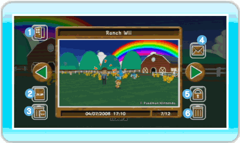
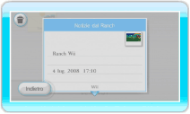

20 |
Album |
 |
Puoi vedere le foto scattate al Ranch o inviarle alla bacheca Wii. Nell’Album puoi salvare fino a 20 foto. Puoi anche salvare le tue foto su una scheda SD. Nota: se scatti più di 20 foto, le più vecchie vengono automaticamente cancellate. ● Guarda l’Album Quando selezioni ALBUM nel menu principale, compare lo schermo Album. Per passare da una foto all’altra, punta verso una freccia verde e premi  Indietro
Esci dallo schermo Album. Salva in una scheda SD
Salva le foto di My Pokémon Ranch su una scheda SD. Nota: le foto vengono salvate in formato jpeg. Se salvi delle foto in una scheda SD non puoi rimetterle nell’Album, ma puoi vederle nel Canale Foto o sul tuo computer. Nota: il copyright di tutte le foto scattate in My Pokémon Ranch appartiene a The Pokémon Company e ad altre compagnie. Si prega di farne un uso conforme alla legge sul copyright. Cancella tutte le foto salvate nella scheda SD
Cancella tutte le foto di My Pokémon Ranch salvate nella scheda SD. 
Invia alla bacheca Wii
Puoi inviare le foto alla bacheca Wii, dove puoi riguardarle. Proteggi / Rimuovi la protezione
Puoi proteggere o rimuovere la protezione a una foto. Quando proteggi una foto, questa non può essere cancellata. Puoi proteggere un massimo di 19 foto. Cancella
Puoi cancellare la foto mostrata sullo schermo.
|
 oppure premi sinistra o destra sul
oppure premi sinistra o destra sul  , o premi
, o premi  o
o  .
. |
 |
 |